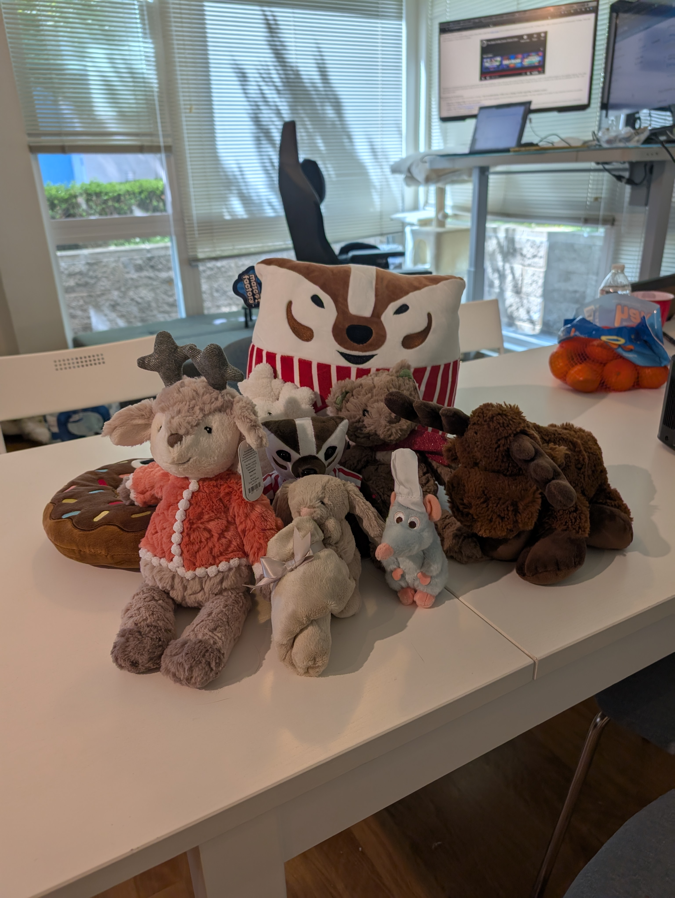
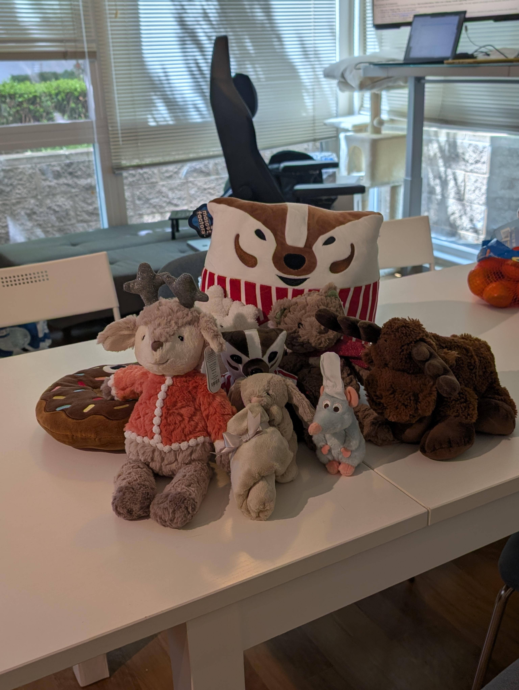
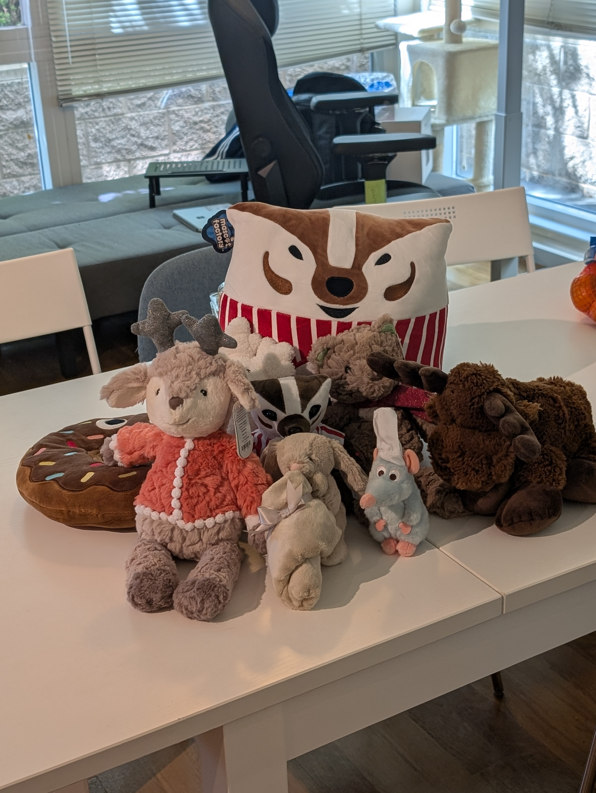
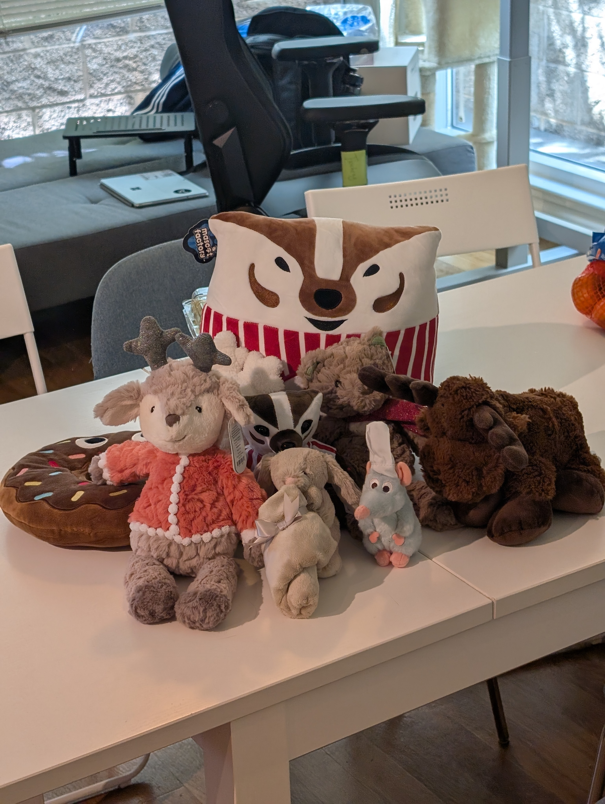
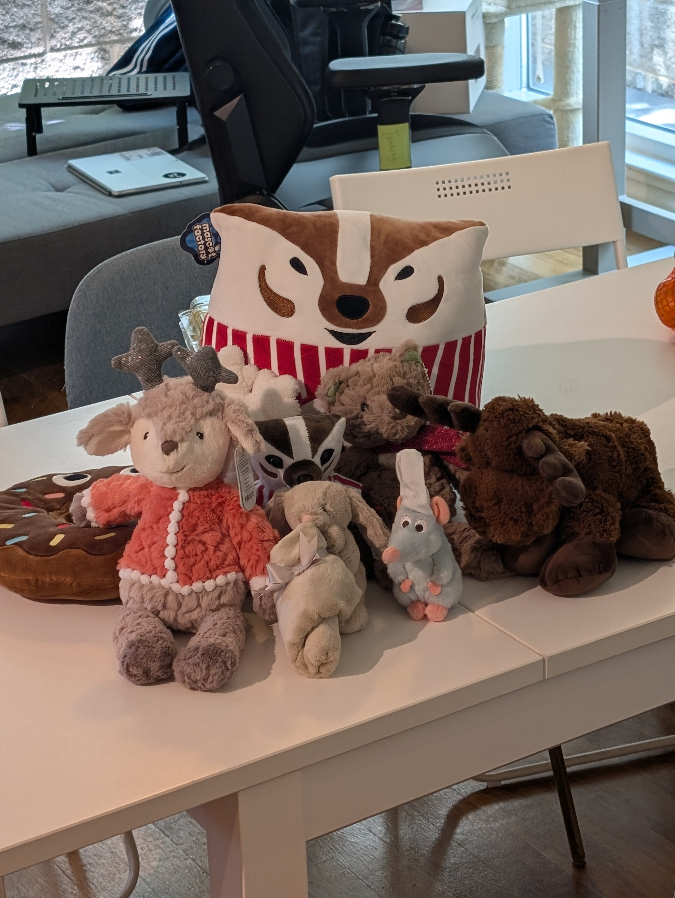

Overview
This page documents my photos and observations for CS180 Project 0: perspective in portraits vs. architecture and a dolly zoom animation.
Contents:
Part 1 (portrait), Part 2 (architecture), Part 3 (dolly zoom), reflections.
Part 1 — Selfie: Wrong vs. Right
Why: Perspective is set by camera–subject distance; zoom only changes field of view. Increasing distance reduces distortion.
Part 2 — Architectural Perspective Compression
Why: Shooting from far away makes viewing rays nearly parallel, reducing foreshortening so the scene looks “flattened.” Moving close with a wide view exaggerates convergence and depth.
Part 3 — Dolly Zoom






Reflections
- Portraits improve when I increase distance; zooming only reframes.
- Telephoto “compression” is really about shooting from farther away.
- Dolly zoom decouples size from perspective — background stretches while the subject stays constant.